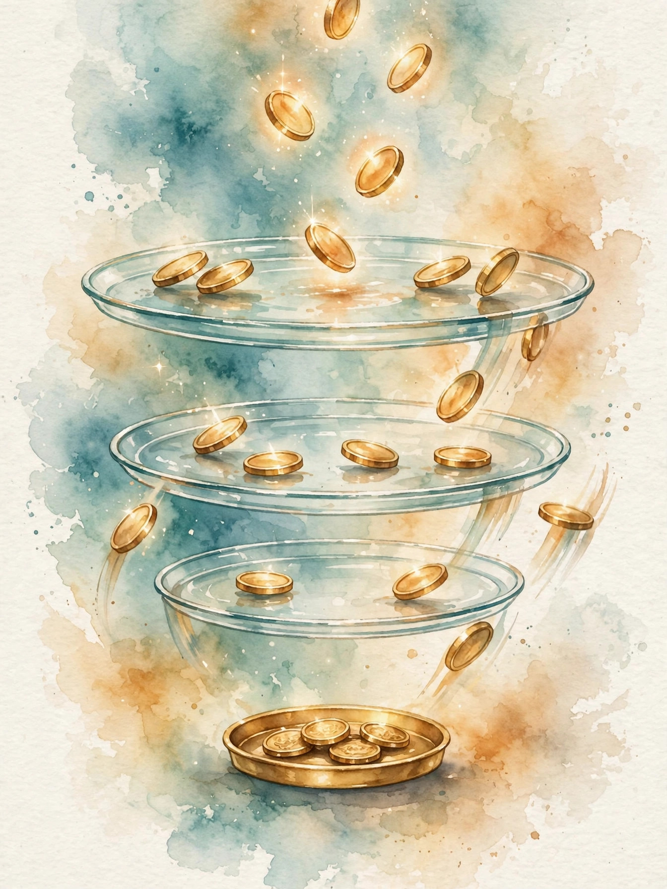

Companion · narrated from the lesson document
Inside the enterprise: retrieval value, caching, latency pricing, and the ownership line at 12B tokens a month.
From the lesson The idea, and every number beside it, comes from the cited concept of the lesson page. The phrasing belongs to the companion.
Illustration Invented by the companion: an analogy, a toy with made-up values, or a what-if. Never lecture content.
companion Companion voice: the idea above the tag is from the lesson. The generalization below it belongs to the companion.
Provenance: no full lecture transcript exists for this session. This page narrates the lesson document u04_enterprise_knowledge_inference_cloud.html, not a video. Every concept carries claim class OFFICIAL-SCHEDULE with status PLANNED / SOURCE ATTRIBUTION PENDING: planned topics mapped to the week, not inspected lecture records. All numbers are the computed toys of the lesson itself, verified against the lesson file. No official source video is named, so no video appears. Illustrations are original watercolors made for this companion. No historical photographs are included.
Section 1 · C01
From the lessonC01 §2
A firm fields 1,000 questions per month. Each correct answer saves 20 dollars of expert time. A retrieval index lifts accuracy from 0.45 to 0.82.
From the lessonC01 §6
Delta correct is 1,000 times 0.37, or 370 answers per month. Value is 370 times 20, or 7,400 dollars per month. If the index covers only half the topics, accuracy falls to 0.63 and value falls to 3,600 dollars. Coverage of the corpus, not model size, drives the number.
Coverage beats model size. Full corpus coverage is worth 7,400 dollars per month. Half coverage is worth 3,600. The index, not the model, drives the number.
Section 2 · C02
From the lessonC02 §5
Three sources at 40,000 build each, 5,000 maintenance each per year, plus 30,000 fixed. Two-year total: 3 times 40k plus 30k plus 2 times 3 times 5k, or 180,000 dollars. The build term dominates year one. Maintenance dominates by year four.
From the lessonC02 §6
Against the C01 value of 7,400 per month, or 88,800 per year, payback arrives in month 25. A fourth source adds 40,000 build plus maintenance and pushes payback past month 30.
| Line | $ |
|---|---|
| Build: 3 sources x 40,000 | 120,000 |
| Fixed | 30,000 |
| Maintenance: 2 years x 3 x 5,000 | 30,000 |
| Two-year total | 180,000 |
| Payback at 7,400 per month | Month 25 |
Section 3 · C03
From the lessonC03 §5
100,000 queries per month, 2 percent corrected, each correction worth 0.001 recall points. Monthly gain starts at 2.0 recall points. Later corrections overlap earlier ones, so marginal gain decays by 0.9 per month.
From the lessonC03 §6
Month gains: 2.0, 1.8, 1.62, 1.46, 1.31, 1.18. Six-month total is 9.37 recall points, not the naive 12. Starting recall 0.70 reaches 0.79. The flywheel works, but the naive linear sum overstates it by 28 percent.
The flywheel decays. Six months of corrections add 9.37 recall points, not the naive 12. Later corrections overlap earlier ones. The flywheel works, but the linear sum overstates it by 28 percent.
Section 4 · C04
From the lessonC04 §5
Fixed 30,000 per month for the custom model. Generic API 4.00 per 1M tokens. Custom variable 1.50 per 1M. Crossover: 30,000 divided by 2.50 times 1M, or 12B tokens per month. Below 12B, generic is cheaper.
From the lessonC04 §6
At 20B per month: generic 80,000, custom 60,000. Custom wins by 20,000 on cost alone. At 5B: generic 20,000, custom 37,500. Generic wins. Quality adds a second term: at 2,000 dollars per quality point per month, the 13-point gap is worth 26,000, and custom wins from 1.6B upward.
Section 5 · C05
From the lessonC05 §5
Same crossover: 30,000 divided by (4.00 minus 1.50) is 12,000 units of 1M, or 12B tokens per month. At 20B: API 80,000, hosting 60,000. At 6B: API 24,000, hosting 39,000. The formula is exact when the assumptions hold.
From the lessonC05 §6
A support desk generates 15B tokens per month. API costs 60,000. Hosting costs 30,000 plus 22,500, or 52,500. Hosting wins by 7,500 per month, 90,000 per year. If volume is uncertain between 8B and 20B, the expected saving is small and the fixed commitment is risky: the API is the safer choice.
| Volume per month | API $ | Hosting $ | Winner |
|---|---|---|---|
| 6B tokens | 24,000 | 39,000 | API by 15,000 |
| 15B tokens | 60,000 | 52,500 | Hosting by 7,500 |
| 20B tokens | 80,000 | 60,000 | Hosting by 20,000 |
12B tokens a month is the ownership line. Below 12B tokens per month, the generic API is cheaper. Above, hosting wins. At 20B the saving is 20,000 per month. At 5B the API wins by 17,500.
Section 6 · C06
From the lessonC06 §5
Hit rate 0.6, model cost 4.00, cache cost 0.25. Effective cost is 0.6 times 0.25 plus 0.4 times 4.00, or 1.75 dollars per 1M. The saving is 2.25 per 1M, a 56 percent cut.
From the lessonC06 §6
15B tokens per month at hit rate 0.6: uncached 60,000, cached 26,250. Monthly saving 33,750. Cache infra costs 3,000. Net saving 30,750. If the hit rate falls to 0.3, effective cost is 2.875 and the saving shrinks to 16,875 minus 3,000.
Illustration Interactive toy. It runs the lesson rule on your inputs.
Cache toy. Move the hit rate. The toy applies the C06 formula with model cost 4.00 and cache cost 0.25.
Hit rate 60 percent

Section 7 · C07
From the lessonC07 §5
Customer desk: 2M sessions per month, latency sensitivity 0.01 dollars per 100 ms. Batching 8 lifts latency from 400 to 1,200 ms: latency cost rises 160,000 per month. Compute saving is 30,000. Net minus 130,000. The batching loses.
From the lessonC07 §6
Batch 2: latency cost plus 40,000, compute saving 12,000, net minus 28,000. No batching wins for this product. For the internal tool with sensitivity 0.001, batch 8 costs 16,000 in latency and nets plus 14,000 per month.
| Choice | Latency cost $/mo | Compute saving $/mo | Net $/mo |
|---|---|---|---|
| Customer desk, batch 8 | +160,000 | -30,000 | -130,000 |
| Customer desk, batch 2 | +40,000 | -12,000 | -28,000 |
| Customer desk, no batch | 0 | 0 | 0 |
| Internal tool, batch 8 | +16,000 | -30,000 | +14,000 |
Latency has a price tag. Batching 8 saves 30,000 in compute and costs 160,000 in latency on the customer desk: net minus 130,000. The same batching on an internal tool nets plus 14,000.
Section 8 · C08
From the lessonC08 §5
Escalation rate 0.10, review 10 minutes, wage 40 dollars per hour. Labor per task is 0.67 dollars against compute of 0.50. Labor is 1.33x the compute. Total variable unit cost is 1.17, not 0.50. The token-only business case understated unit cost by 57 percent.
From the lessonC08 §6
10,000 tasks per month: compute 5,000, review labor 6,667, fixed ops 8,000. Total 19,667 per month, 1.97 per task. If better prompts cut the escalation rate to 0.04, labor falls to 2,667 and the total to 15,667. Prompt work pays for itself when it moves the escalation rate.
| Line | $ per month |
|---|---|
| Compute: 10,000 x 0.50 | 5,000 |
| Review labor: 10,000 x 0.67 | 6,667 |
| Fixed ops | 8,000 |
| Total | 19,667 |
| Per task | 1.97 |
Section 9 · C09
From the lessonC09 §5
Cheap model: 0.50 per call, success 0.6, one retry. Expected attempts 1.4, cost 0.70. Success probability 0.84. Cost per success 0.83 dollars. Premium model: 2.00 per call, success 0.95, no retry. Cost per success 2.11. The cheap model wins here.
From the lessonC09 §6
At success 0.3 the cheap model costs 1.67 per success, still below 2.11. At success 0.2 it costs 2.50 and the premium model wins. The crossover sits near success 0.25.
Price the success, not the attempt. The cheap model costs 0.50 per attempt but 0.83 per success. The premium model costs 2.00 per attempt and 2.11 per success. The cheap model wins until its success rate falls near 0.25.
Section 10 · C10
From the lessonC10 §5
Fixed 30,000, variable 1.50 per 1M. Average cost at 100M tokens per month: 301.50. At 500M: 61.50. At 12B: 4.00, the C05 break-even. At 100B: 1.80. The average falls fast, then flattens toward the variable cost.
Always quote F and v separately, never the pilot average.
From the lessonC10 §6 Direct quote from the lesson page.
From the lessonC10 §6
The pilot runs at 500M tokens per month and reports 61.50 per 1M. The rollout plan that uses 61.50 will mislead: at full volume the true number is near 2.00. Quote the fixed and the variable separately, never the pilot average.
| Volume per month | Average $/1M |
|---|---|
| 100M tokens | 301.50 |
| 500M tokens, the pilot | 61.50 |
| 12B tokens | 4.00 |
| 100B tokens | 1.80 |
Section 11 · C11
From the lessonC11 §5
Switching cost 250,000: 150,000 re-integration, 60,000 re-validation, 40,000 egress and retraining. Monthly saving from the switch 5,000. Payback 50 months, over 4 years. At a 3-year horizon the switch loses.
From the lessonC11 §6
Vendor A raises prices 20 percent, from 60,000 to 72,000 per month. Monthly saving 12,000. Payback 20.8 months: the switch pays within 2 years. If switching cost were 100,000, payback is 8.3 months, and the threat of switching disciplines the vendor.
| Switching cost $ | Monthly saving $ | Payback months |
|---|---|---|
| 250,000 | 5,000 | 50.0 |
| 250,000 | 12,000 | 20.8 |
| 100,000 | 12,000 | 8.3 |
Switching cost is the vendor pricing power. With a 250,000 dollar switching cost, the vendor can raise prices 20 percent and you still need 20.8 months to earn the switch back. Cut switching cost to 100,000 and the payback is 8.3 months.
Section 12 · C12
From the lessonC12 §5
Fixed 38,000, variable 1.17 per task, success 0.8, value 5 per success. Contribution is 4.00 minus 1.17, or 2.83 per task. Break-even is 38,000 divided by 2.83: 13,428 tasks per month.
From the lessonC12 §6
The desk handles 18,000 tasks per month today: 4,572 tasks of headroom. If success falls to 0.6, contribution is 1.83, break-even is 20,765, and the current volume loses. Success rate is the lever.
Illustration Interactive toy. It runs the lesson rule on your inputs.
Workload break-even toy. Enter fixed cost, variable cost per task, success rate, and value per success.
F v s value
Wisdom index